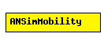

File: Mobility/ANSimMobility.ned
C++ definition: click here
Uses the <position_change> elements of the ANSim tool's trace file.
Author: Andras Varga
The following diagram shows usage relationships between modules, networks and channels. Unresolved module (and channel) types are missing from the diagram. Click here to see the full picture.
| Name | Type | Description |
|---|---|---|
| debug | bool | debug switch |
| ansimTrace | xml | the ANSim trace file in XML |
| nodeId | numeric const | <position_change> elements to match; -1 gets substituted to parent module's index |
| updateInterval | numeric const | time interval to update the hosts position |
simple ANSimMobility parameters: debug : bool, // debug switch ansimTrace: xml, // the ANSim trace file in XML nodeId: numeric const, // <position_change> elements to match; // -1 gets substituted to parent module's index updateInterval : numeric const; // time interval to update the hosts position endsimple